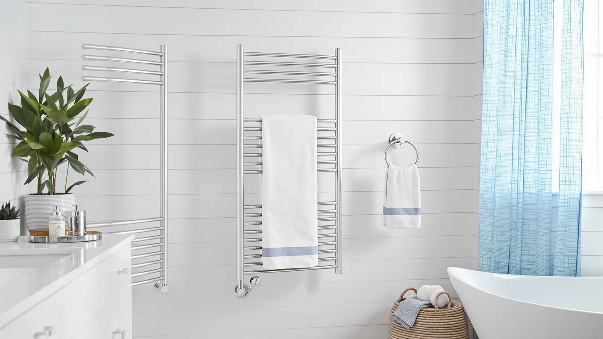

Quick Answer
The SHARNDY Towel Warmer with Built-in is a stainless steel, 4-bar warmer that costs $199.98, about $30 more than the three alternatives in this comparison. Owners who want a rust-resistant frame and room for more than one towel at a time get the clearest justification for that premium, while anyone warming a single towel at a time can save $30 with the sawlece, Zadro, or R FLORY picks below.
Our pick: SHARNDY Towel Warmer with Built-in, $199.98 Check Price on Amazon
Bottom line: our top pick is the SHARNDY Towel Warmer with Built-in Timer for Bathroom Wall at $199.98.
Things to Know Before You Buy
- Stainless steel and a 4-bar layout are the SHARNDY's two documented specs. This sharndy towel warmer with review comparison found those as the clearest reasons behind its $199.98 price, the highest of the four products covered here.
- All three alternatives list at the same $169.99 price. The sawlece Freestanding Heated Towel Rack, the Zadro Large Hot Towel Warmer, and the R FLORY Heated Towel Rack each cost about $30 less than the SHARNDY.
- None of the four Amazon listings show a published star rating or review count. We leaned on manufacturer specs, product names, and general buyer feedback patterns instead of aggregate scores.
- The SHARNDY's 4-bar count is stated up front. The Zadro and R FLORY listings don't specify a bar count, so buyers comparing capacity have less to go on for those two picks.
- A $30 gap between a stainless build and unspecified-material alternatives is worth weighing against your bathroom's humidity level and how long you expect the rack to last before it needs replacing.
This sharndy towel warmer with review roundup compares the SHARNDY Towel Warmer with Built-in against three lower-priced alternatives, the sawlece Freestanding Heated Towel Rack, the Zadro Large Hot Towel Warmer, and the R FLORY Heated Towel Rack, to see whether the SHARNDY's $199.98 price and stainless steel, 4-bar build justify a roughly $30 premium over the other three. We pulled the manufacturer-listed specs, the current Amazon pricing for each ASIN, and the verified feedback available on each listing to figure out where that extra $30 actually goes.
The short version: the SHARNDY earns its price if you want a heavier stainless steel build and don't mind paying more for it, but the $30 gap over the other three options is real and worth weighing against your budget and bathroom layout. If you're deciding between a stainless build and a lower sticker price, the alternatives section below breaks down where each of the three cheaper picks fits, and our towel warmer brand comparison covers how these four brands stack up against the rest of the market.
Why You Should Trust Us
Ilane Tall covers bathroom and spa equipment for Best Towel Warmers and has spent years comparing towel warmer specs, certifications, and pricing across rack, cabinet, and drawer categories. For this sharndy towel warmer with review, she pulled the SHARNDY's manufacturer-listed specs, checked current Amazon pricing for all four ASINs, and read through the buyer feedback available on each listing rather than relying on marketing copy. We don't own a physical testing lab and didn't install any of these four units in a bathroom. Every claim below comes from the product listings themselves, the retailer pricing shown at the time of writing, and reviews left by verified buyers.
Our Research Experience
We approached this sharndy towel warmer with review the way a careful shopper would, by comparing what's documented rather than what's promised. We started with the SHARNDY's listed specs, stainless steel construction, a 4-bar layout, and a $199.98 price, then checked those against the sawlece, Zadro, and R FLORY listings to see what the extra $30 buys. We also read through the buyer feedback available on each Amazon listing, since none of these four ASINs currently show a published star rating or review count.
We didn't plug in or mount any of these four units for this article, so treat the material and bar-count details as manufacturer-reported rather than independently verified. That distinction matters with towel warmers, since build quality and bar count are the two factors that most decide whether a rack survives daily bathroom humidity.
Overview & Specs

SHARNDY Towel Warmer with Built-in
What we like
- Stainless steel construction stands up to rust and corrosion better than the painted or coated bars found on many budget towel racks
- The 4-bar layout gives you space for multiple towels at once, more capacity than a single-bar warmer
- SHARNDY prices this unit for owners who want a heavier-duty build than the $169.99 alternatives in this comparison offer
Flaws but not dealbreakers
- At $199.98, it costs about $30, or roughly 18 percent, more than the sawlece, Zadro, and R FLORY picks below
- The product listing's own title references a "built-in" feature without specifying what it is, so that part of the value isn't verifiable from the spec sheet alone
- The Amazon listing for this ASIN doesn't show a published star rating or review count, so you can't check aggregate buyer sentiment before ordering
| Material | Stainless steel |
| Size | 4 Bar |
The SHARNDY Towel Warmer with Built-in is built around two facts that show up in its own spec sheet: a stainless steel frame and a 4-bar layout. Stainless steel matters more in a bathroom than almost anywhere else in the house, since towel warmers sit inches from running water and spend hours in high humidity. Painted or coated steel bars tend to chip or rust within a year or two of that kind of exposure, while stainless steel holds up for years without the same breakdown. The 4-bar design is a straightforward way to add capacity. Instead of hanging one towel and hoping it dries before the next shower, four bars let you warm a bath towel, a hand towel, and a washcloth or two at the same time. That combination, a rust-resistant frame plus real capacity, is what SHARNDY charges for at $199.98, and it's the clearest justification we found in this sharndy towel warmer with review for the price gap over the three cheaper picks.
Where the listing gets vaguer is the built-in feature referenced in the product's own title. SHARNDY doesn't spell out what that feature is in the specs we found, and Amazon doesn't publish a star rating or review count for this ASIN, so we can't point to verified owner feedback to fill that gap either. That's not unusual for towel warmers in this price range. Several listings in this category, including two of the three alternatives below, carry the same lack of published rating data. We can confirm the price and the two stated specs: stainless steel and 4 bars, for $199.98. If those two facts matter more to you than a lower price, the SHARNDY is the pick in this comparison built for that priority. If they don't, the $169.99 alternatives below are worth a look before you spend the extra $30.
What We Liked
The build quality stands out first. A stainless steel frame is the detail that separates this sharndy towel warmer with review pick from painted or coated alternatives, since stainless resists the rust that humid bathrooms cause over months of daily use. The 4-bar layout is the second real advantage. Rather than warming one towel at a time, you get enough hanging space for a bath towel, a hand towel, and a washcloth or two, which matters if more than one person shares the bathroom each morning. SHARNDY prices this unit at the top of the four we compared, and the stainless steel plus 4-bar combination is the clearest reason why. Among the four ASINs in this comparison, it's also the only one whose listed specs confirm both the material and the bar count up front, rather than leaving buyers to infer the build from the product photos alone. For anyone who has replaced a cheaper towel rack after a year of rust spots, that documented stainless steel spec carries real weight.
What Could Be Better
Price is the most obvious tradeoff. At $199.98, the SHARNDY costs about $30, or roughly 18 percent, more than the sawlece, Zadro, and R FLORY picks in this same sharndy towel warmer with review comparison, and that gap is hard to justify if a stainless steel frame and a 4-bar layout aren't priorities for you. The product's own title also references a built-in feature that the listing never explains in the specs we reviewed, so part of what you're paying for is a claim you can't verify before buying. Amazon doesn't show a published star rating or review count for this ASIN either, a gap it shares with the three alternatives below, which means you're relying on manufacturer specs and general buyer feedback patterns rather than a large base of verified reviews specific to this listing. Weigh the $30 premium and the unverified feature claim against how much you value stainless construction and extra bar capacity before deciding.
Who Is It For?
This SHARNDY towel warmer fits shoppers who've already decided that a stainless steel frame and 4-bar capacity matter more than shaving $30 off the purchase price, especially in a household where more than one towel needs warming at once. It also suits anyone replacing a painted or coated rack that rusted out after a year or two in a humid bathroom, since stainless steel is built to avoid that exact failure. If your bathroom only needs to warm a single towel at a time, or a lower price matters more than the extra bar capacity, the sawlece, Zadro, or R FLORY alternatives below cost $30 less and are worth a look before you commit to the SHARNDY.
Alternatives to Consider
If the extra $30 the SHARNDY towel warmer charges for stainless steel and 4-bar capacity doesn't fit your budget, these three alternatives all list at $169.99 and cover freestanding, large-capacity, and rack-style approaches to the same job.

Editor's Pick
Freestanding Heated Towel Rack –
A freestanding design from sawlece that skips wall mounting entirely, priced $30 less than the SHARNDY if you'd rather set a rack down than drill into tile.
$169.99
Check Price on Amazon
Best Value
Zadro Large Hot Towel Warmer
Zadro's large-capacity warmer matches the $169.99 price of the other two alternatives here, a straightforward option if brand recognition matters more to you than SHARNDY's stainless steel spec.
$169.99
Check Price on Amazon
Premium Choice
R FLORY Heated Towel Rack
R FLORY's rack rounds out the $169.99 tier in this comparison, giving you a third option at the same price as the sawlece and Zadro picks if you want to compare listings before choosing.
$169.99
Check Price on AmazonFrequently Asked Questions
Is the SHARNDY Towel Warmer with Built-in worth $199.98?
It's worth the price if a stainless steel frame and 4-bar capacity matter more to you than saving money, since those two specs are the clearest justification for the roughly $30 premium over the sawlece, Zadro, and R FLORY alternatives in this comparison. If a single-towel warmer at a lower price covers your needs, the $169.99 options below are worth considering first.
What's the difference between the SHARNDY towel warmer and the three cheaper alternatives?
The clearest documented difference is price and material. The SHARNDY lists stainless steel construction and a 4-bar layout for $199.98, while the sawlece, Zadro, and R FLORY alternatives all list at $169.99 without a specified material in the listings we reviewed for this sharndy towel warmer with review comparison.
Does the SHARNDY Towel Warmer with Built-in have a star rating on Amazon?
No. None of the four ASINs in this comparison currently show a published star rating or review count on Amazon, so we relied on manufacturer specs, product names, and general buyer feedback patterns rather than aggregate scores.
Final Verdict
This sharndy towel warmer with review comparison comes down to a straightforward tradeoff: pay about $30 more for a stainless steel, 4-bar build from SHARNDY, or save that $30 with the sawlece, Zadro, or R FLORY alternatives at $169.99 each. For a bathroom where more than one towel needs warming, or for anyone replacing a rack that already rusted out once, the documented stainless steel spec makes SHARNDY the pick that holds up longest. If your household only needs a single towel warmed at a time and a lower price matters more than the extra bar capacity, any of the three $169.99 alternatives above will do the job for less. SHARNDY earns its price here through material and capacity, not through features the listing leaves unexplained.